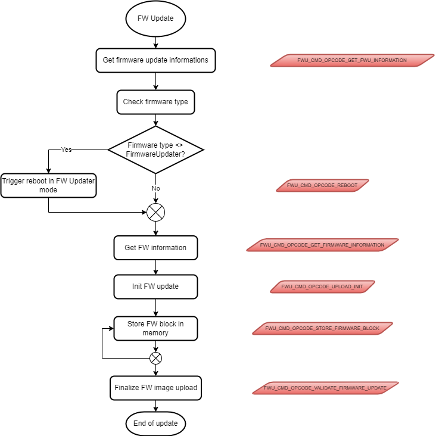

Overview
The firmware update core sub-system library gathers a set of functions that can be used to implement a firmware updater application which main goal is to update any embedded firmware image within the device.
This library comes with a sample application that showcase how to use some of the provided functions.
The library API covers various functionalities from getting informations on the installed firmware images along with their versions to verify a proper and correct new firmware image installation. Using all of the provided functions is not mandatory. It depends on the operations a firmware update application needs to do and these checks are up to the end user when designing his own application.
Moreover, the library defines operational codes (so called opcodes) that trigger specific actions whenever they are received. If an end user wants to reuse this library, then the same opcodes will have to be reused because they are put into the action answer sent back to the requester.
For example, the opcode 0x01 corresponds to the function to get firmware information. When receiving this opcode, the function FWU_GetFirmwareUpdateInformationResponse() is called from the sample application. Such function actually does the action of gathering firmware images information. Such data is then pushed into the answer that will be sent back to the requester (which can be a mobile phone for example). Added to this response packet is the opcode that triggered the action.
The process depicted in the following diagram is an overview on the various operations that must be done for a firmware image update and the opcodes that must be sent to the device from the source of the update process (e.g. from a mobile device). These opcodes are represented in red background boxes.
For example, it is usual that the first operation would be to identify the device and its content. This is why the opcode ` FWU_CMD_OPCODE_GET_FWU_INFORMATION is sent. This triggers the execution of the function FWU_GetFirmwareUpdateInformationResponse() on the EM9305 side which returns the expected information. Based on that, the requester can decide if a reboot to the FW updater mode is needed, for example because it needs to update the application while the latter is under execution.
Then, by sending some other opcodes, the next steps of the process are executed and completed until the new firmware image is fully uploaded and verified.
As said earlier, the sample application nvm_fwu_target is a typical example of a firmware update implementation on the device side. The main condition for it to work properly is that the mobile application sends the exact same opcodes that are defined and processed within this example.
Moreover, this sample application can be used as a starting point to design a more complete one with extra feature which are application dependant. This can be done by adding extra checks and actions when receiving these opcodes.